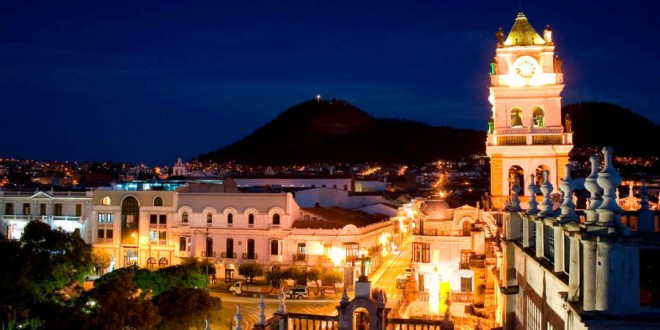
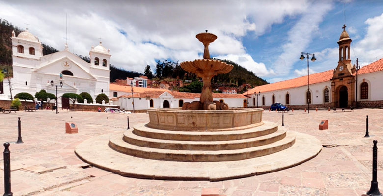

Mi Ciudad, Sucre

- Descripción:
-
Sucre (quechua: Chuqichaka; aimara: Sukri; guaraní: Sucre), cuyo nombre originario es Chuquisaca, fue llamada La Plata por los españoles. Es la capital del departamento de Chuquisaca. En Sucre se resume la historia de la Confederación de los Charcas, desde sus orígenes más antiguos. Aquí se fundó la Audiencia de Charcas con la llegada de los españoles y finalmente la República de Bolivia, el 6 de agosto de 1825.
- Habitantes:
-
Según datos del censo 2012, la ciudad cuenta con unos 290 000 habitantes.
- Datos importantes:
-
- Esta ciudad es la capital histórica y constitucional de Bolivia además de ser sede del Poder Judicial del país.
- La ciudad ha sido designada Patrimonio de la Humanidad por la UNESCO en 1991.
